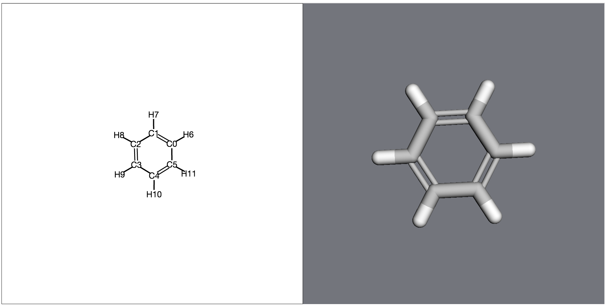

Atoms, molecules, and biomolecules¶
The Molecular design toolkit is built around familiar physical objects. Below is a quick rundown of those objects and how they relate to one another.
- For most of the examples here, we’ll look at a benzene molecule, which you can create as follows:
- 
>>> import moldesign as mdt, moldesign.units as u >>> benzene = mdt.from_name('benzene') >>> benzene.draw()
Contents
Atoms¶
Class documentation: moldesign.Atom
An atom object contains physical information,
>>> atom = mdt.Atom('C')
>>> atom.atomic_number
6
>>> atom.mass
12.0 * u.amu
>>> atom.position
[0.0, 0.0, 0.0] * u.angstrom
bond topology,
>>> atom = benzene.atoms[0]
>>> atom.bonds
[<Bond: C3 (#3) - C4 (#4) (order: 1)>,
<Bond: C2 (#2) - C3 (#3) (order: 2)>,
<Bond: C3 (#3) - H9 (#9) (order: 1)>]
>>> atom.bond_graph
{<Atom C2 (elem C), index 2 in molecule Molecule: benzene>: 2,
<Atom C4 (elem C), index 4 in molecule Molecule: benzene>: 1,
<Atom H9 (elem H), index 9 in molecule Molecule: benzene>: 1}
and contains references to the residue, chain, and molecule it belongs to.
>>> mol = mdt.from_pdb('3fpp')
>>> atom = mol.atoms[0]
>>> atom.molecule
<3fpp (Molecule), 4097 atoms>
>>> atom.residue
<Residue PRO43 (index 0, chain A) in Molecule: 3fpp>
>>> atom.chain
<Chain A in Molecule: 3fpp>
Bonds¶
Class documentation: moldesign.Bond
Data structure documentation: moldesign.Molecule.bond_graph()
The molecule’s bonding topology can be accessed as an iterator over
bonds:
>>> list(benzene.bonds)
[<Bond: C4 (#4) - H10 (#10) (order: 1)>,
<Bond: C4 (#4) - C5 (#5) (order: 2)>,
<Bond: C3 (#3) - H9 (#9) (order: 1)>,
<Bond: C3 (#3) - C4 (#4) (order: 1)>,
<Bond: C5 (#5) - H11 (#11) (order: 1)>,
<Bond: C0 (#0) - C1 (#1) (order: 2)>,
<Bond: C0 (#0) - C5 (#5) (order: 1)>,
<Bond: C0 (#0) - H6 (#6) (order: 1)>,
<Bond: C1 (#1) - H7 (#7) (order: 1)>,
<Bond: C1 (#1) - C2 (#2) (order: 1)>,
<Bond: C2 (#2) - C3 (#3) (order: 2)>,
<Bond: C2 (#2) - H8 (#8) (order: 1)>]
Bonding information can also be accessed as a bond graph:
>>> benzene.bond_graph
{<Atom C1 (elem C), index 1 in molecule Molecule: benzene>:
{<Atom C0 (elem C), index 0 in molecule Molecule: benzene>: 2,
<Atom C2 (elem C), index 2 in molecule Molecule: benzene>: 1,
<Atom H7 (elem H), index 7 in molecule Molecule: benzene>: 1},
<Atom C0 (elem C), index 0 in molecule Molecule: benzene>:
{<Atom C1 (elem C), index 1 in molecule Molecule: benzene>: 2,
...},
...}
Molecules¶
Class documentation: moldesign.Molecule
You’ll spend most of your time in MDT working with Molecules. They
contain all the information necessary to describe a molecular system.
Each Molecule contains a list of Atoms.
>>> len(benzene.atoms)
12
>>> atom = benzene.atoms[3]
>>> atom.index
3
Coordinates¶
The 3D positions and momenta of all atoms in a molecule are stored as an Nx3 array:
>>> benzene.positions
[[-0.76003939, 1.16931777, 0.02273989],
[ 0.63314801, 1.24365634, -0.01297972],
[ 1.39390687, 0.07715829, -0.01219047],
[ 0.76420701, -1.16771399, 0.02607069],
... ] * u.angstrom
These coordinates can also be accessed and modified through individual atoms, both through a 3D
position vector at atom.position, and through individual elements atom.x, atom.y, atom.z.
>>> atom = benzene.atoms[2]
>>> atom.position == benzene.positions[2,:]
True
>>> atom.position.x = 100.0 * u.angstrom
>>> benzene.position[2]
[ 100.0 0.07715829 -0.01219047] * u.angstrom
Note that changes to atom.position are automatically reflected in molecule.positions, and
vice versa. atom.momentum, atom.px, atom.py, atom.pz, and molecule.momenta are
similarly linked.
Molecular properties¶
Molecular properties are quantities
that have been calculated by an energy model at the
molecule’s current position.
>>> benzene.set_potential_model(mdt.models.RHF, basis='3-21g')
>>> benzene.calculate()
>>> benzene.potential_energy
-6201.2054456 * u.eV
>>> benzene.calculate_forces()
>>> benzene.forces
[[ 0.25704289, -0.3918098 , -0.10710722],
[-0.24434863, -0.15226163, 0.05302621],
[-0.2362215 , -0.16058291, 0.05744945],
[-0.25672489, 0.3913183 , -0.10966027],
... ] * u.eV/u.angstrom
Properties almost always include potential_energy; other common properties include
forces, wfn, and dipole. Calling mol.calculate() will only calculate the model’s
default quantities (see model.DEFAULT_PROPERTIES for a given model). Additional properties,
if available, can be requested via mol.calculate(requests=[prop1, prop2, ...])
- Note:
These properties are only accessible if they correspond to the molecule’s current position - MDT will throw a NotCalculatedError if the molecule has moved.
>>> benzene.calculate() >>> benzene.potential_energy -6201.2054456 * u.eV >>> mdt.set_angle(benzene.atoms[0], benzene.atoms[1], benzene.atoms[2], 5.0*u.degrees) >>> benzene.potential_energy Traceback (most recent call last): ... NotCalculatedError: The 'potential_energy' property hasn't been calculated yet. ...
Primary structure¶
Class documentation: moldesign.Chain, moldesign.Residue
Biomolecules also contain primary structure information such as Chains
and Residues. Chains can be accessed by name OR by index:
>>> chain1 = molecule.chains['A']
>>> chain2 = molecule.chains[0]
>>> chain1 is chain2
True
Each chain contains residues. In a chain, residues can similarly be
accessed through a flat list or by name:
>>> res0 = molecule.residues[0]
>>> resA = molecule.chains['A'].residues['PRO1']
>>> res0 is resA
True
A flat list of all residues in a molecule is also available at molecule.residues.
Electronic structure¶
Class documentation: moldesign.orbitals.wfn.ElectronicWfn
If you’ve run an quantum chemistry calculation on a molecule, its electronic structure will also
be available. This information is accessible through:
mol.wfn (see its documentation for more details).
>>> mol.set_energy_model(mdt.models.RHF, basis='sto-3g')
>>> mol.calculate()
>>> wfn = benzene.wfn
>>> wfn.aobasis
<BasisSet (sto-3g) of Molecule: benzene>
>>> wfn.orbitals
{'atomic': <BasisSet (sto-3g) of Molecule: benzene>,
'canonical': <36 canonical MolecularOrbitals in None/sto-3g wfn>}